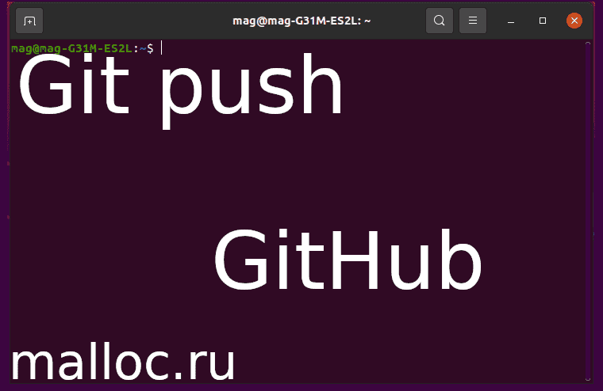

Создаем локальный репозиторий git и отправляем его на удаленный репозиторий GitHub.
В статье присутствует пошаговая инструкция и есть видео, в котором показано все на практике.
Автор показал как использует исполняемый файл .sh для выполнения push на GitHub.
Действие происходит в терминале Ubuntu.
Все действия протестированы и проверены на дистрибутиве Ubuntu.
Приятного чтения и просмотра!

Установим Git
Открываем терминал:
"Ctrl+Alt+T" или "ПКМ, открыть Терминал"(англ. - Open in Terminal).
В терминале пишем: sudo apt update sudo apt install git
"sudo" - это права суперпользователя (root).
"apt update" - обновить список доступных пакетов.
"install git" - установить Git.
Создаем локальный и удаленный репозитории
Шаг 0
Открываем терминал:
"Ctrl+Alt+T" или "ПКМ, открыть Терминал"(англ. - Open in Terminal).
В открывшемся окне Терминала, записываем команды, которые подробно описаны ниже.
Создаем директорию (папку) - Repo: mkdir Repo
Директория нужна, что бы хранить там файл(ы).
"mkdir" - это команда для создания новых директорий (папок).
Заходим в папку: cd Repo
"cd" - нужна для перемещения по директориям.
В папке создаем файл "README.md" и записываем в него название нашего проекта.
Например: Test echo '# Test' > README.md
"echo" - в данном случае используется для создания и записи строки в файл README.md
Шаг 1
Теперь создадим локальный репозиторий .git: git init
Добавляем файл "README.md" в .git: git add README.md
Метка о внесенных изменениях: git commit -m "first commit"
Шаг 2
Заходим в свой аккаунт на GitHub и создаем новый репозиторий: Test
Шаг 3
Возвращаемся в терминал.
Добавляем адрес удаленного репозитория: git remote add origin https://github.com/USER/Test.git*
USER - ваше имя аккаунта на GitHub: ../code-malloc/Test.git
Конечно можно скопировать с GitHub команды и вставить уже готовый вариант.
Но я хочу, что вы прочувствовали весь процесс сами.
Почти все готово. Осталось обновить внешние ссылки вместе со связанными объектами: git push -u origin master
Вводим имя аккаунта и пароль.*
Если вы все сделали правильно, то произойдет загрузка(upload) файла "README.md" на удаленный репозиторий GitHub.
Возвращаемся в браузер и обновляем страничку(перезагрузить F5).
Если появился файл "README.md" с надписью "Test", то все было сделано верно.
Если его нету, то не спишите отчаиваться. Посмотрите видео, которое находиться ниже.
* Вы можете сделать тоже самое, но через SSH. Данная тема выходит за рамки этой статьи.
"push" одной командой
Мое решение нельзя назвать универсальным, но оно соответствует моим запросам.
Обычно, когда заливаю код на GitHub, использую три команды: git add * git commit -m " - " git push -u origin master
Теперь сделаем так, что бы они выпольнялись за одну команду.
Шаг 0
Для начала откроем терминал:
"Ctrl+Alt+T" или "ПКМ, открыть Терминал"(англ. - Open in Terminal).
Теперь в открывшемся окне Терминала, записываем команды для обновления операционной системы. Они подробно описаны ниже.
Создадим директорию (папку) - "Push": mkdir Push
Теперь, зайдем в папку "Push": cd Push
Шаг 1
Создадим и запишем в файл "git-push.sh" команды, которые нужны для push: echo 'git add * && git commit -m " - " && git push -u origin master' > git-push.sh
На первый взгляд команда кажеться сложной. Но приглядевшись, вы поймете, что все намного проще, чем кажется.
Вы можете открыть файл(любым удобным для вас способом) и изменить/добавить команды.
Дадим нашему файлу "git-push.sh" права на исполнение: chmod +x git-push.sh
"chmod +x" - позволяет задать параметры запуска файла на исполнение.
Шаг 2
Выходим из директории "Push" и переходим в директорию "Repo": cd ../Repo
Созданим любой файл и запишем в него например "Hello, World!": echo 'Hello, World!' > File
Шаг 3
Теперь загрузим файл на GitHub.
Для этого нужно зайти в папку "Push" и запустить скрипт "git-push.sh": ./../Push/git-push.sh
Шаг 4
Возвращаемся в браузер и обновляем страничку(перезагрузить F5).
Если появился файл "File" с надписью "Hello, World!", то все было сделано верно.
Если его нету, то не спишите отчаиваться. Посмотрите видео, которое находиться ниже.
Заключение
В первой половине статьи, кратко расмотрен процесс создания локального репозитория git и удаленного репозитория на GitHub.
Во второй половине, приведен способ загрузки проекта с локального репозитория на GitHub при помощи скрипта.
Простота скрипта в том, что вместо трёх команд мы используем одну.
Конечно его можно переделать под себя или придумать иной подход, который будет удобен именно для вас!
Надеюсь, статья была полезной и у вас получилось найти ответы на свои вопросы.